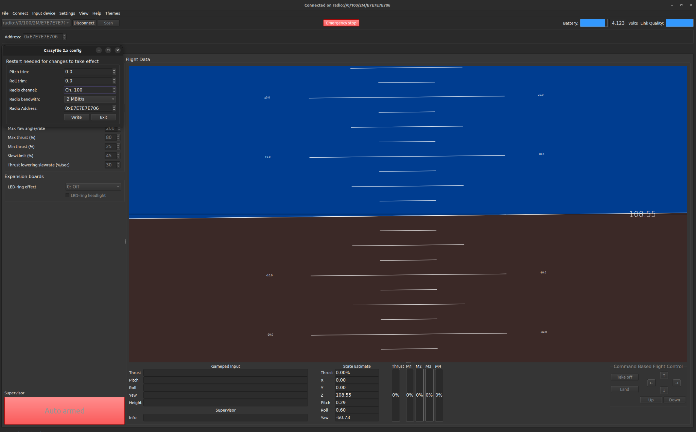
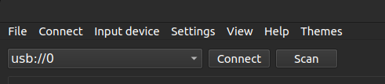
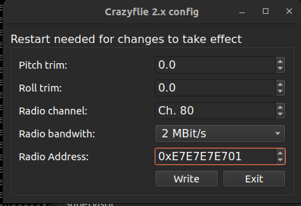
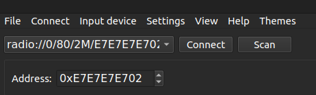
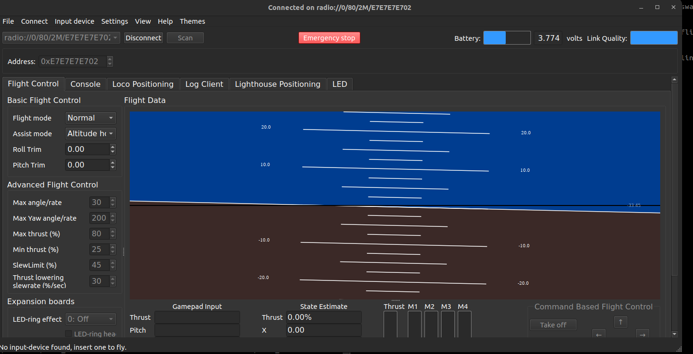
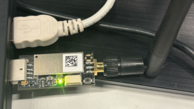
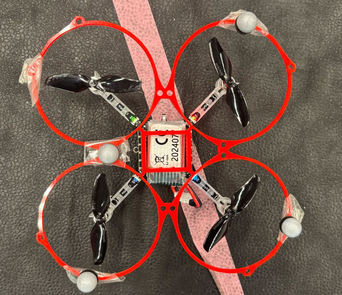
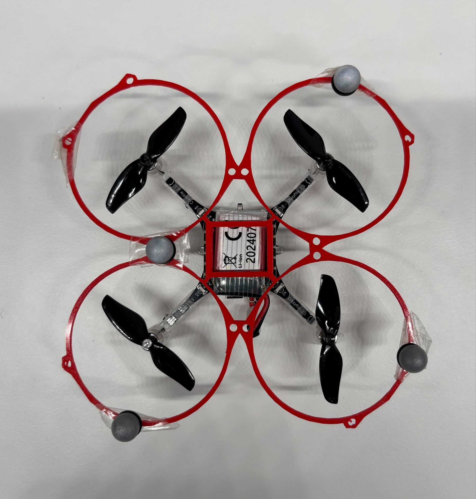
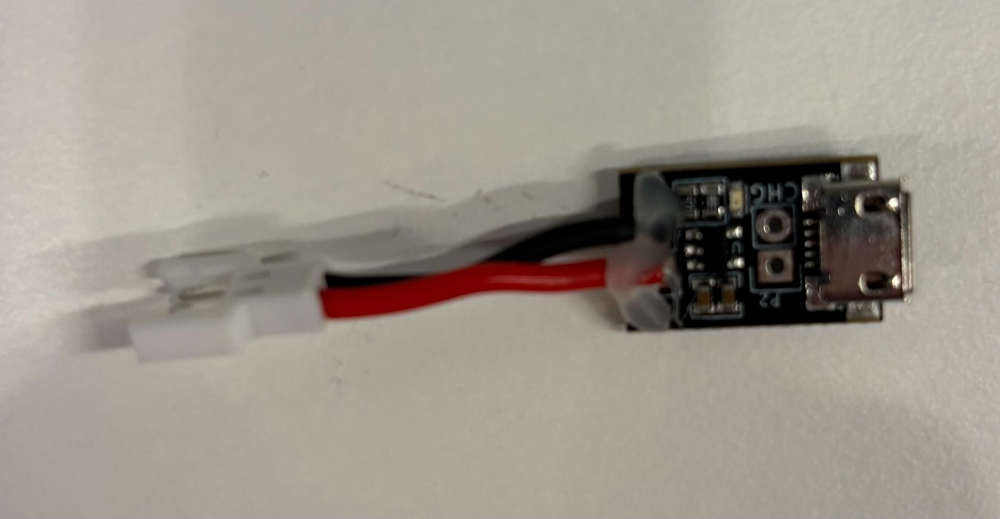

Drone Instruction¶
Configuration¶
Install the Crazyflie Client (cfclient)¶
More details can be found here.
- Install dependencies
sudo apt install git python3-pip libxcb-xinerama0 libxcb-cursor0 # Activate virtual environment to avoid conflicts of dependencies. Here we use Miniconda as an example. conda create -n env_1_cfclient python=3.12 # “env_1_cfclient” is the name of this virtual environment and can be changed to other names. conda activate env_1_cfclient pip3 install --upgrade pip conda deactivate # This command can be skipped if you keep the following steps within the same terminal. -
Set USB permissions, see also here for more details.
sudo groupadd plugdev sudo usermod -a -G plugdev $USER cat <<EOF | sudo tee /etc/udev/rules.d/99-bitcraze.rules > /dev/null # Crazyradio (normal operation) SUBSYSTEM=="usb", ATTRS{idVendor}=="1915", ATTRS{idProduct}=="7777", MODE="0664", GROUP="plugdev" # Bootloader SUBSYSTEM=="usb", ATTRS{idVendor}=="1915", ATTRS{idProduct}=="0101", MODE="0664", GROUP="plugdev" # Crazyflie (over USB) SUBSYSTEM=="usb", ATTRS{idVendor}=="0483", ATTRS{idProduct}=="5740", MODE="0664", GROUP="plugdev" EOF sudo udevadm control --reload-rules sudo udevadm trigger -
Install cfclient
-
Launch cfclient
Configure Crazyflie’s address in cfclient for the first use of Crazyflie¶
- Connect the Crazyflie with computer via micro USB cable
- Open cfclient. The interface looks as follows

- Click on
Scan->usb://0will show in the drop down menu ->
Click onConnect

- After successful connection, define the address by going to tab
Connect/Configure 2.x->
In the following window, change the last two digits ofRadio Addressto e.g.,01->
Click onWrite

- Exit cfclient
Connect to the Crazyflie through Crazyradio¶
The following order matters
- Turn on the Crazyflie by connecting it to its battery.
A successful start should have LEDs as shown here in Section Getting to know your Crazyflie. - Plug in the Crazyradio
- Launch cfclient
- Change the following
Addressto the desired one
(e.g., the one just configured before)

- Click on
Scanto detect available Crazyflie addresses - Select the desired Crazyflie address from the drop down menu
- Important: Before clicking on ‘connect’, briefly unplug and then plug in the Crazyradio again
- Click on
Connectin the cfclient.
A successful connection will be shown on the top of the windowConnected on radio…
Failed connection: alwaysConnecting …
Note: This unplug and plug-in action in step 7 helps resolve potential connection issues as noted here, which causes cfclient to get stuck during the connection stage. Although an alternative solution (downgrading the firmware) is mentioned on the same page, it has not been tested yet.
If the connection succeeds, the flight data on the right side of cfclient should show the orientation of the Crazyflie. The LEDs on Crazyradio and Crazyflie should look like this:
Crazyradio has green & yellow LED on

Crazyflie: M1 blinking red twice every second (constantly red means error), M2 & M3 constantly blue, M4 constantly yellow.
Other cases please refer to here in section Understanding LEDs. - Optional: Check the box
View/Tabs/Parametersto check the available topics.
Define Crazyflie coordinate in Qualisys¶
- Attach markers.
The arrangement of markers is crucial for accurate pose estimation and precise control of the Crazyflie. Consider using an asymmetric layout of markers.
Refer to the example picture below.

- Open QTM and define a rigid body for the Crazyflie with the origin set at its center.
Make sure that the x-axis is oriented towards the front (as shown in Section Getting to Know Your Crazyflie), and the z-axis points upwards. - Name the rigid body
cfx, wherexcorresponds to the last digits of the Crazyflie's address (as a rule of thumb).
For example, if the address is0xE7E7E7E702, name itcf2; if the address is0xE7E7E7E701, name itcf1, and so on. This will later be used in the config file.
Clone the repository and compile¶
mkdir cffly_ws && cd cffly_ws
mkdir src && cd src
git clone https://github.com/IMRCLab/crazyswarm2.git
cd ..
colcon build --symlink-install
source install/setup.bash
To test whether everything has been set up properly:
1. Connect the computer to the Qualysis WiFi
2. Setup config files properly:
Change the yaml file crazyswarm2/config/crazyflies.yaml: enable related Crazyflie, make sure its name (cfx) and uri match the names defined in QTM and the address in the cfclient, respectively.
Set the hostname in file crazyswarm2/crazyswarm2/crazyflie/config/motion_capture.yaml according to the IP address of Qualisys.
3. Turn on Crazyflie and connect to it through Crazyradio
4. Test whether the Crazyflie can be detected/connected and Qualysis is working well:
Note: For safety reasons of Crazyflie, make sure every following thing looks correct:
- Check if the Crazyflie's position displayed in the Rviz window reflects its real-world position. If no position is displayed or the position is drifting, something is wrong.
- Crazyradio & Crazyflie should have LEDs illuminated before.
Launch an example of Crazyflie taking off & landing using ROS2¶
- Make sure your computer is connected with Crazyflie through Crazyradio
- Make sure Qualisys is connected
- Make sure that the area around the propellers is clear of any obstacles, such as battery cables or tape on the frame. Otherwise Crazyflie will have problems taking off/flying.
- Open terminal 1 and run
This ROS node works as a server, meaning that it cannot operate the drone independently. It needs to work with the command in terminal 2.
Note 1: Make sure everything mentioned before (the Crazyflie's position in the Rviz window, LEDs, logs in the terminal, etc.) looks good before running the second command in terminal 2.
Note 2: If you terminate this node and wish to launch it again, make sure to unplug Crazyradio and then plug it back in. The green and yellow LEDs on the Crazyradio indicate a successful connection.
Remark 1: If you encounter the following error:It can be resolved by commenting out the code block between lines“[crazyflie_server-3] what(): Issue with connection radiobroadcast://*/80/2M. Your radio with firmware 3.2 does not support broadcast communication. Please upgrade your Crazyradio firmware!”198and203incrazyflie-link-cpp/src/CrazyradioThread.cpp(as shown here). This is a bug as noted here.
Remark 2: Usingcflibas backend is important for Crazyradio2.0 as noted here and here.
Notes¶
- Make sure the Crazyflie is well balanced, e.g., check if the battery is properly placed.
- Before running any ros node, make sure the cfclient is closed.
- The Crazyflie battery is charged using the device shown below.
Connect the battery to one end of the charger and the micro-USB cable to the other end. Then connect the micro-USB cable to a laptop to supply power for charging.